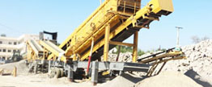
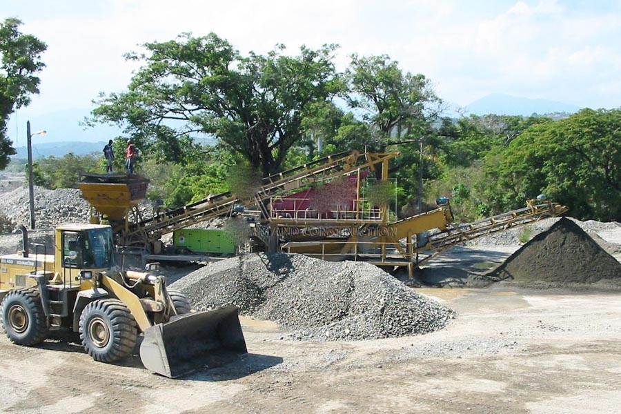

- Home >
- application case >
- concrete crushers for sale
Construction waste crushing production line
Mobile construction waste crushing station for urban construction waste crushing.
concrete crushers for sale
Concrete Crusher price in the Philippines, the Philippine pf1315 impact crusher manufacturers offer
Key words: concrete Crusher against broken manufacturers
Description: the PF1315 of inversed impact crusher is ideal for breaking concrete crusher, introduced last year to fight back in Haidong region in Qinghai manufacturers Shanghai CAG-breaking mine production PF1315 counter broken pavement concrete breaking, Haidong clients say CAG mine machine equipment for production of very high cost performance, quality is also very good, the device currently running very stable, efficiency is very high.

CAG feeder road concrete breaker, pf1315, impact crusher features and applications Description:
Pf1315 counter type crusher is one of the most high market acceptance and the best way to use one of the road concrete crushing equipment, and the pf1315 counter crusher has the characteristics of large amount of treatment, fine grain size and grain shape. The broken product is a cube, the needle plate content is low, no internal cracks, not only is the ideal equipment for the broken road concrete, but also the high grade highway, water conservancy, airport runway, construction and other industries to produce high quality stone material.
CAG mill road concrete crusher, impact crusher pf1315 price in Philippines
About CAG mill road concrete crusher, pf1315 counterattack type crusher price, also need according to concrete road crusher, pf1315 counterattack type crusher model and yield to decide, with a device often have several models and different types of output, power and other parameters are different, the general production equipment is often the price is more expensive, small production equipment often the price is low, the specific pricing to sales manager according to the customer’s actual condition for the selection can give accurate quotation. It is worth mentioning, CAG in Zhengzhou Mining Machinery Co., Ltd. manufacturing sales of concrete road crusher, pf1315 counterattack type crusher is the highest price of the manufacturers and customers can rest assured to buy CAG mill any of a device.
CAG concrete crusher, feeder roads are described below PF1315 part of inversed impact crusher success stories
(1) Nissan 3000 tons of granite stones production line adopts CAG mine, Guangxi PF1315 impact crusher
(2) the Qinghai Hai Dong to introduce CAG miner PF1315 impact crusher in cement concrete pavement broken
(3) stone factory introduces CAG mine in Gansu province PF1315 of inversed impact crusher, Jaw Crusher, cone crusher, feeder, vibrating screen, consists of producing 200 tons of Highway sand-gravel material production line
Leave Me A Message, Now
If you have any questions regarding equipment prices, production line configuration or other problems, you can send a message to us, we will contact you soon.